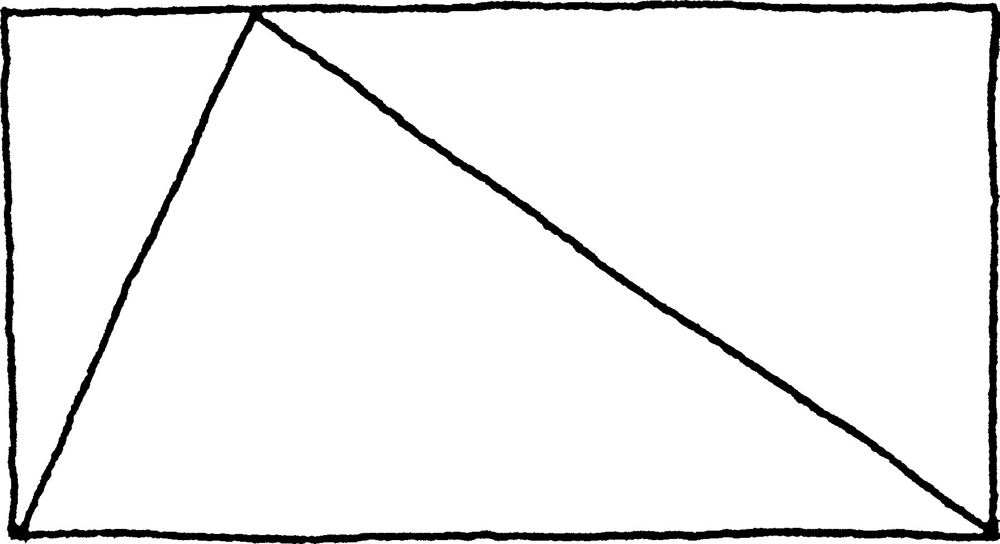
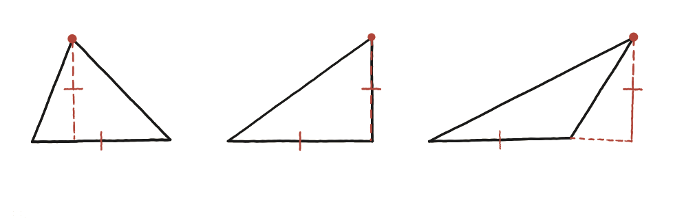
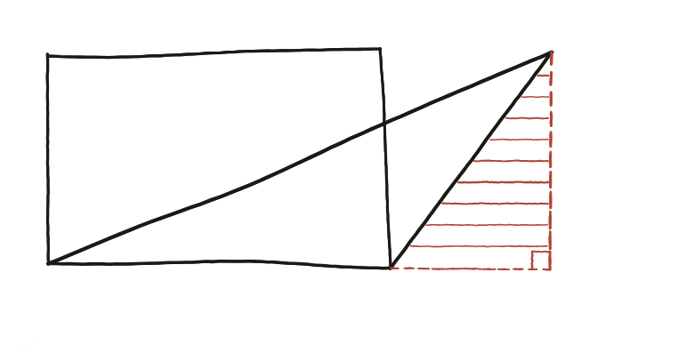

Què li passa a l'àrea del triangle quan desplacem el vèrtex horitzontalment? Què passa si sobrepassa els costats de la caixa?

Una predicció abans de calcular
Abans de tornar a fer cap càlcul, val la pena aturar-se a predir: si es desplaça horitzontalment el vèrtex superior d'un triangle, mantenint la mateixa base i la mateixa alçada, l'àrea creix, decreix, o es queda igual?
Els tres casos, un al costat de l'altre
Als tres triangles de la figura, la base i l'alçada són exactament les mateixes —les marquetes ho confirmen expressament. Només canvia la posició horitzontal del vèrtex superior. En el primer i el segon triangle, aquest vèrtex encara cau damunt d'algun punt de la base. En el tercer, en canvi, el vèrtex ja ha sortit per fora: el peu de l'altura (marcat en discontinu) queda fora del segment de la base, no sobre seu.

On falla exactament l'argument de q14
Tornant a la demostració anterior pas per pas: allà es deia que "la vertical parteix la caixa en dos trossos, un a cada banda del triangle". Aquest pas donava per fet que el peu de la vertical queda entre els dos extrems de la base, per poder-la partir en dos trossos que sumar. Quan la punta surt per fora, el peu de la vertical ja no talla la base per dins: cau fora d'ella, i no hi ha dos trossos interiors per sumar. L'argument de q14, tal com estava escrit, no cobreix aquest cas —calia trobar-ne un altre.
La mateixa idea, amb el signe canviat
La solució és canviar una suma per una resta. S'estén imaginàriament la base fins sota del vèrtex desplaçat, formant una caixa més gran (i un triangle rectangle gran, que ja és el cas fàcil de q14). D'aquest triangle rectangle gran, cal treure el triangle rectangle petit —la peça ratllada— que sobresurt de la base original per la banda on el vèrtex s'ha desplaçat. El triangle que realment interessa és, doncs, un triangle gran menys un de petit, en comptes de dos de petits sumats: exactament la mateixa idea del cas fàcil, aplicada dues vegades, però ara restant en lloc de sumar.

L'àrea no canvia mai, es desplaci on es desplaci el vèrtex, sempre que la base i l'altura es mantinguin fixes. Però l'argument que ho demostra sí que canvia de forma: quan el peu de l'altura cau dins de la base, es demostra sumant dues meitats (q14); quan cau fora, cal restar un triangle rectangle petit d'un de gran. Totes dues construccions són la mateixa idea de fons —"un triangle és la meitat de la seva caixa"— aplicada amb un signe diferent segons el cas.
Comprovació
Base 8, altura 5: amb la punta a distància 3, a 8 (just al cantó) i a 14 del cantó esquerre, les tres àrees surten 8×5/2=20 —la mateixa, fins i tot quan la punta ja ha sortit de la base i cal restar en lloc de sumar.